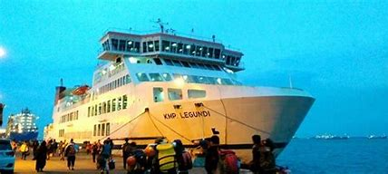
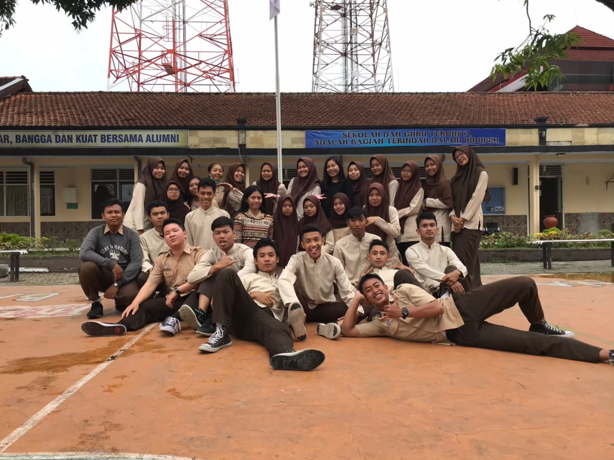

About Me

Ini adalah foto saya saat ini. Nama saya Danang Heru Prayogo asal dari Lombok,Nusa Tenggara Barat.
Link Tugas
First Journey
Aug 31, 2019
Foto ini menceritakan perjalanan saya dari Lombok ke Surabaya menggunakan kapal. Waktu tempuh perjalanan ini sekitar 20 jam. Saya merasa sangat excited karena ini pertama kalinya saya berpergian jauh sendirian. Dalam perjalanan ini saya diharuskan memperhitungkan segala kebutuhan yang diperlukan. Dalam perjalanan ini juga saya bertemu dengan teman -teman yang lain yang sedang berkumpul. Selama perjalanan kami saling bersenda gurau, berbagi cemilan serta saling menjaga satu sama lain. Juga selama perjalanan menggunakan kapal ini kami dapat melihat sunrise dan sunset dari tengah laut itu merupakan suatu pemandangan yang indah.
Best Thing
Sep 2, 2017
Ini merupakan perpisahan saya dengan teman kelas SMA. Dalam foto ini kami telah melewati susah senangnya kehidupan SMA bersama-sama.Ditambah dengan adanya dram yang terjadi antar kubu yang ada dikelas yang membuat ssuasana yang semakin seru serta dalam masa sma ini kami sering berpergian mengelilingi tempat wisata yang ada di daerha kami walaupun tidak semua dapat ikut di dalamnya. Kenangan ini akan tetap tersimpan didalam memori kami hingga tua nanti.